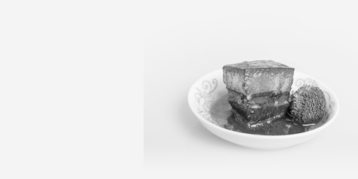
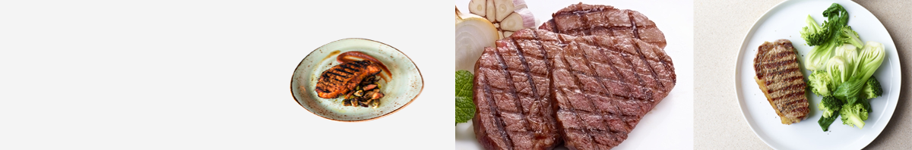

菜品展示
PRODUCT DISPLAY
东坡肉
东坡肉，又名红烧肉、滚肉、东坡焖肉，是眉山和江南地区特色传统名菜。东坡肉在浙菜、川菜、鄂菜等菜系中都有，且各地做法也有差异，有先煮后烧的，有先煮后蒸的，有直接焖煮收汁的。红烧肉的主料和造型大同小异，主料都是半肥半瘦的猪肉，成品菜都是码得整整齐齐的麻将块儿，红得透亮，色如玛瑙，夹起一块尝尝，软而不烂，肥而不腻。
东坡肉
东坡肉，又名红烧肉、滚肉、东坡焖肉，是眉山和江南地区特色传统名菜。东坡肉在浙菜、川菜、鄂菜等菜系中都有.
关于我们
ABOUT US